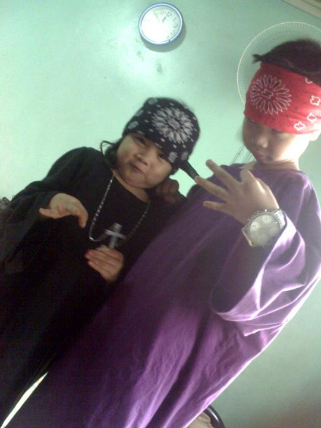
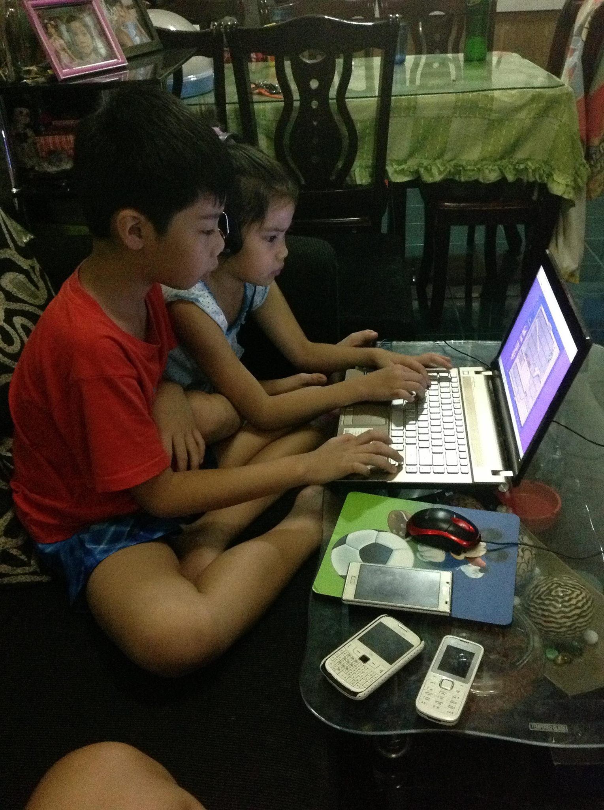
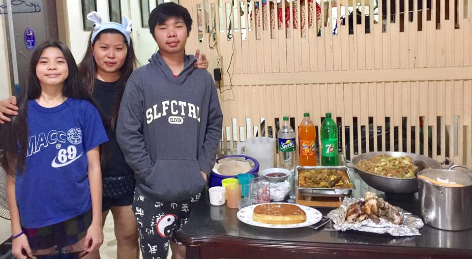
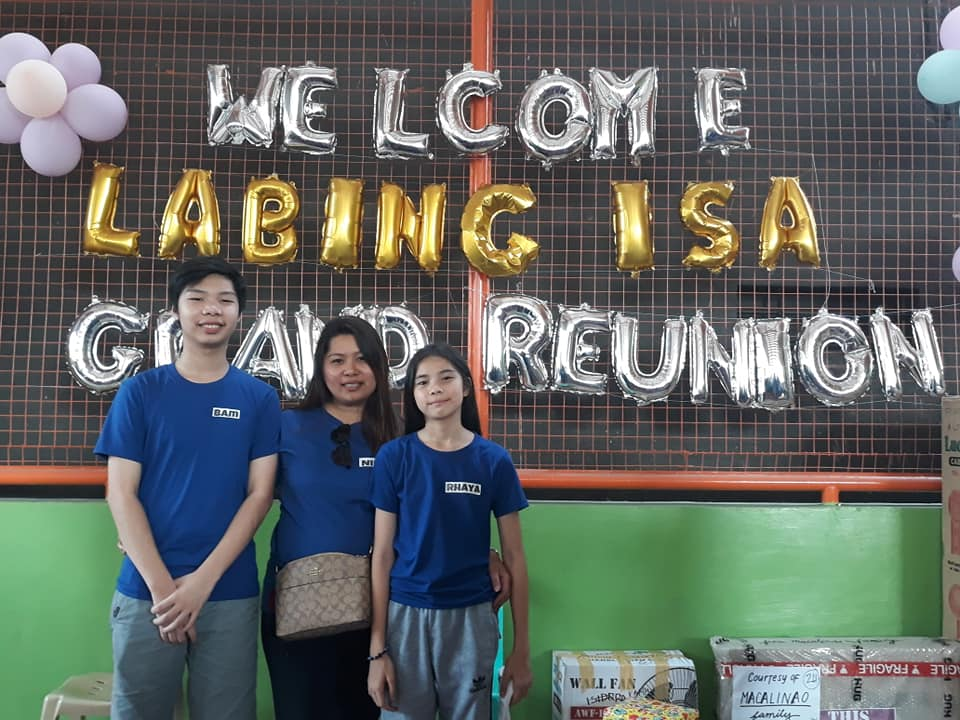
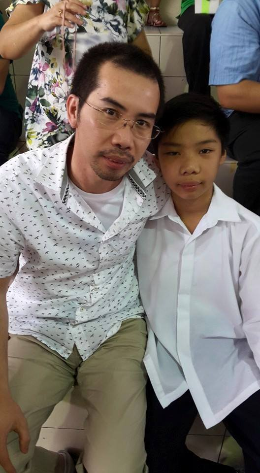
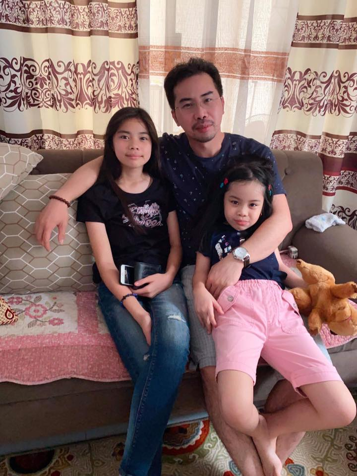

Home |
Author |
Interest |
Family |
Friends |
Pets |
Student |
|---|
My Family |
|  |
My Younger Sister My relationship with my sister is filled with playful teasing, a tradition that goes back to our childhood
days. Whenever we got into arguments, she would cunningly challenge me to spell words she knew I struggled with, exploiting my weakness in spelling
to gain the upper hand and leave me frustrated. Despite the occasional rivalry, our bond grew stronger as we shared countless moments of laughter and
mischief. Nowadays, our teasing has evolved into harmless pranks, with me often hiding to startle her and elicit joyful laughter from both of us. Our relationship
is defined by love, laughter, and an enduring camaraderie that transcends any petty disagreements we may have. We cherish each other's company and the memories
we've created together, from childhood squabbles to present-day antics. As siblings, we know that beneath the teasing lies a deep affection and unbreakable bond that
will continue to strengthen with time.
|
 |
|  |
My MotherMy relationship with my mother is marked by her protective nature, especially towards my younger sister, whom she
dotes on fiercely due to her being a girl. Despite her protective instincts, my mother and I share a deep bond built on love and understanding. She often worries about my sister's
tendency to forget to inform her about her whereabouts, particularly when she ventures out late with friends, which sometimes results in conflicts between them. However, my mother's
frustrations with my sister's actions contrast with her leniency towards me; as a self-proclaimed hermit who prefers the comforts of home and video games, I rarely find myself on the receiving
end of her scolding. Despite our differences in lifestyle and interests, the love and respect I hold for my mother remain unwavering, and I appreciate her guidance and care even in moments of
disagreement. Our relationship is a testament to the enduring bond between a mother and her children, navigating the complexities of family dynamics with patience, understanding, and unwavering love.
|
 |
|  |
My FatherMy relationship with my father is defined by his role as the breadwinner of our household, dedicating himself tirelessly to provide
for our family's needs. As a hard worker employed abroad, his absence is keenly felt in our day-to-day lives, with his presence limited to cherished moments during holidays such as Christmas,
New Year's, and our birthdays. Despite the physical distance separating us, the bond between my father and me remains strong, grounded in love, respect, and the understanding of his sacrifices
for our well-being. Our conversations during his visits are filled with laughter, shared stories, and the warmth of familial connection, making these occasions all the more precious. Even in his absence,
my father's unwavering support and guidance shape my values and aspirations, instilling in me a sense of responsibility and dedication to family. Though separated by miles, our hearts are united in love
and admiration for the man who selflessly toils to provide us with a better life. The infrequency of our reunions only serves to deepen the gratitude and appreciation I hold for my father, whose unwavering
commitment to our family's happiness serves as an enduring source of inspiration.
|
 |
| Email: bambamguibao@yahoo.com.ph |

|

|

|
Phone number: +63(2)7335554 |